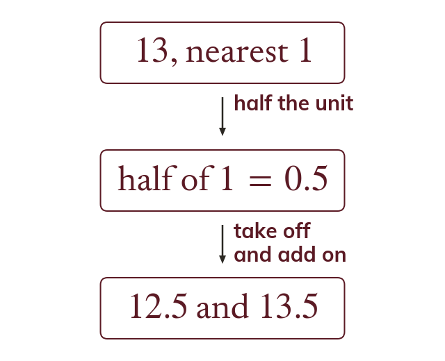

Half a unit either side
The bounds sit half a unit either side of a rounded value. So to the nearest lies from to
A rounded value stands for every value that rounds to it. The bounds sit half a unit either side, so to the nearest whole number lies from up to